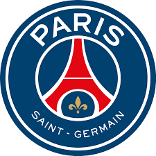

Lional Messi
Lionel Andrés Messi[note 1] (Spanish pronunciation: [ljoˈnel anˈdɾes ˈmesi] (listen); born 24 June 1987), also known as Leo Messi, is an Argentine professional footballer who plays as a forward for Ligue 1 club Paris Saint-Germain and captains the Argentina national team. Widely regarded as one of the greatest players of all time, Messi has won a record seven Ballon d'Or awards[note 2] and a record six European Golden Shoes, and in 2020 he was named to the Ballon d'Or Dream Team. Until leaving the club in 2021, he had spent his entire professional career with Barcelona, where he won a club-record 34 trophies, including ten La Liga titles, seven Copa del Rey titles and the UEFA Champions League four times.[note 3] With his country, he won the 2021 Copa América and the 2022 FIFA World Cup. A prolific goalscorer and creative playmaker, Messi holds the records for most goals in La Liga (474), most hat-tricks in La Liga (36) and the UEFA Champions League (eight), and most assists in La Liga (192) and the Copa América (17). He also has the most international goals by a South American male (103). Messi has scored over 800 senior career goals for club and country, and has the most goals by a player for a single club (672).
| Personal Information |
|
| Full name |
Lionel Andrés Messi[1] |
| Date of birth |
24 June 1987 (age 36)[1] |
| Place of birth |
Rosario, Santa Fe, Argentina |
| Height |
1.70 m (5 ft 7 in)[1] |
| Position(s) |
Forward, attacking midfielder |
| Team Information |
 |
| Current team |
Paris Saint-Germain |
| Number |
30 |
| Youth career |
|
| 1992–1995 |
Grandoli |
| 1995–2000 |
Newell's Old Boys |
| 2000–2003 |
Barcelona |
| Senior career* |
|
| Years |
Team |
Apps |
(Gls) |
| 2003–2004 |
Barcelona C |
10 |
(5) |
| 2004–2005 |
Barcelona B |
22 |
(6) |
| 2004–2021 |
Barcelona |
520 |
(474) |
| 2021– |
Paris Saint-Germain |
58 |
(22) |
Messi relocated to Spain from Argentina aged 13 to join Barcelona, for whom he made his competitive debut aged 17 in October 2004. He established himself as an integral player for the club within the next three years, and in his first uninterrupted season in 2008–09 he helped Barcelona achieve the first treble in Spanish football; that year, aged 22, Messi won his first Ballon d'Or. Three successful seasons followed, with Messi winning four consecutive Ballons d'Or, making him the first player to win the award four times. During the 2011–12 season, he set the La Liga and European records for most goals scored in a single season, while establishing himself as Barcelona's all-time top scorer. The following two seasons, Messi finished second for the Ballon d'Or behind Cristiano Ronaldo (his perceived career rival), before regaining his best form during the 2014–15 campaign, becoming the all-time top scorer in La Liga and leading Barcelona to a historic second treble, after which he was awarded a fifth Ballon d'Or in 2015. Messi assumed captaincy of Barcelona in 2018, and won a record sixth Ballon d'Or in 2019. Out of contract, he signed for French club Paris Saint-Germain in August 2021, spending two seasons at the club and winning Ligue 1 twice.
An Argentine international, Messi is the country's all-time leading goalscorer and also holds the national record for appearances. At youth level, he won the 2005 FIFA World Youth Championship, finishing the tournament with both the Golden Ball and Golden Shoe, and an Olympic gold medal at the 2008 Summer Olympics. His style of play as a diminutive, left-footed dribbler drew comparisons with his compatriot Diego Maradona, who described Messi as his successor. After his senior debut in August 2005, Messi became the youngest Argentine to play and score in a FIFA World Cup (2006), and reached the final of the 2007 Copa América, where he was named young player of the tournament. As the squad's captain from August 2011, he led Argentina to three consecutive finals: the 2014 FIFA World Cup, for which he won the Golden Ball, the 2015 Copa América, winning the Golden Ball, and the 2016 Copa América. After announcing his international retirement in 2016, he reversed his decision and led his country to qualification for the 2018 FIFA World Cup, a third-place finish at the 2019 Copa América, and victory in the 2021 Copa América, while winning the Golden Ball and Golden Boot for the latter. For this achievement, Messi received a record-extending seventh Ballon d'Or in 2021. In 2022, he led Argentina to win the 2022 FIFA World Cup, where he won a record second Golden Ball, scored seven goals including two in the final, and broke the record for most games played at the World Cup (26).
Messi has endorsed sportswear company Adidas since 2006. According to France Football, he was the world's highest-paid footballer for five years out of six between 2009 and 2014, and was ranked the world's highest-paid athlete by Forbes in 2019 and 2022. Messi was among Time's 100 most influential people in the world in 2011, 2012 and 2023. In 2020 and 2023, he was named the Laureus World Sportsman of the Year, with Messi being the first team-sport athlete to win the award. In 2020, Messi became the second footballer and second team-sport athlete to surpass $1 billion in career earnings.Lionel Andrés Messi[note 1] (Spanish pronunciation: [ljoˈnel anˈdɾes ˈmesi] (listen); born 24 June 1987), also known as Leo Messi, is an Argentine professional footballer who plays as a forward for Ligue 1 club Paris Saint-Germain and captains the Argentina national team. Widely regarded as one of the greatest players of all time, Messi has won a record seven Ballon d'Or awards[note 2] and a record six European Golden Shoes, and in 2020 he was named to the Ballon d'Or Dream Team. Until leaving the club in 2021, he had spent his entire professional career with Barcelona, where he won a club-record 34 trophies, including ten La Liga titles, seven Copa del Rey titles and the UEFA Champions League four times.[note 3] With his country, he won the 2021 Copa América and the 2022 FIFA World Cup. A prolific goalscorer and creative playmaker, Messi holds the records for most goals in La Liga (474), most hat-tricks in La Liga (36) and the UEFA Champions League (eight), and most assists in La Liga (192) and the Copa América (17). He also has the most international goals by a South American male (103). Messi has scored over 800 senior career goals for club and country, and has the most goals by a player for a single club (672).
Messi relocated to Spain from Argentina aged 13 to join Barcelona, for whom he made his competitive debut aged 17 in October 2004. He established himself as an integral player for the club within the next three years, and in his first uninterrupted season in 2008–09 he helped Barcelona achieve the first treble in Spanish football; that year, aged 22, Messi won his first Ballon d'Or. Three successful seasons followed, with Messi winning four consecutive Ballons d'Or, making him the first player to win the award four times. During the 2011–12 season, he set the La Liga and European records for most goals scored in a single season, while establishing himself as Barcelona's all-time top scorer. The following two seasons, Messi finished second for the Ballon d'Or behind Cristiano Ronaldo (his perceived career rival), before regaining his best form during the 2014–15 campaign, becoming the all-time top scorer in La Liga and leading Barcelona to a historic second treble, after which he was awarded a fifth Ballon d'Or in 2015. Messi assumed captaincy of Barcelona in 2018, and won a record sixth Ballon d'Or in 2019. Out of contract, he signed for French club Paris Saint-Germain in August 2021, spending two seasons at the club and winning Ligue 1 twice.
An Argentine international, Messi is the country's all-time leading goalscorer and also holds the national record for appearances. At youth level, he won the 2005 FIFA World Youth Championship, finishing the tournament with both the Golden Ball and Golden Shoe, and an Olympic gold medal at the 2008 Summer Olympics. His style of play as a diminutive, left-footed dribbler drew comparisons with his compatriot Diego Maradona, who described Messi as his successor. After his senior debut in August 2005, Messi became the youngest Argentine to play and score in a FIFA World Cup (2006), and reached the final of the 2007 Copa América, where he was named young player of the tournament. As the squad's captain from August 2011, he led Argentina to three consecutive finals: the 2014 FIFA World Cup, for which he won the Golden Ball, the 2015 Copa América, winning the Golden Ball, and the 2016 Copa América. After announcing his international retirement in 2016, he reversed his decision and led his country to qualification for the 2018 FIFA World Cup, a third-place finish at the 2019 Copa América, and victory in the 2021 Copa América, while winning the Golden Ball and Golden Boot for the latter. For this achievement, Messi received a record-extending seventh Ballon d'Or in 2021. In 2022, he led Argentina to win the 2022 FIFA World Cup, where he won a record second Golden Ball, scored seven goals including two in the final, and broke the record for most games played at the World Cup (26).
Messi has endorsed sportswear company Adidas since 2006. According to France Football, he was the world's highest-paid footballer for five years out of six between 2009 and 2014, and was ranked the world's highest-paid athlete by Forbes in 2019 and 2022. Messi was among Time's 100 most influential people in the world in 2011, 2012 and 2023. In 2020 and 2023, he was named the Laureus World Sportsman of the Year, with Messi being the first team-sport athlete to win the award. In 2020, Messi became the second footballer and second team-sport athlete to surpass $1 billion in career earnings.
Messi skils
Paris Saint-Germain
 |
| Position |
RW |
| Kit Number |
30 |
| Joined Club |
Aug 10.2021 |
| Contract Lent |
2023 |
Argentina
 |
| Position |
RW |
| Kit Number |
10 |
| Ball Skils |
| Ball Control |
94 |
| Dribbling |
96 |
- Messi is G.O A T
- -All
- --Mirsaid
Qeydiyyat